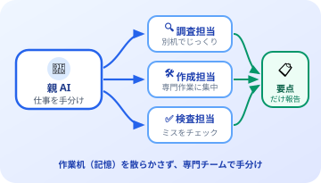

ガイド 1
AI を賢く動かす
サブエージェント（AI のチーム分担）
1人の AI に全部やらせると作業机（記憶）が散らかります。専門の別 AI に仕事を分担し、要点だけ報告してもらう仕組みを学びます。
- 1人作業 vs チーム分担で「時間・記憶」がどう変わるか
- 調査・作成・検査の定番パターン 5 選の使い分け
- Claude Code と GitHub Copilot の設定の違い